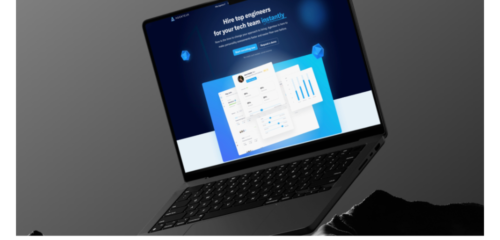
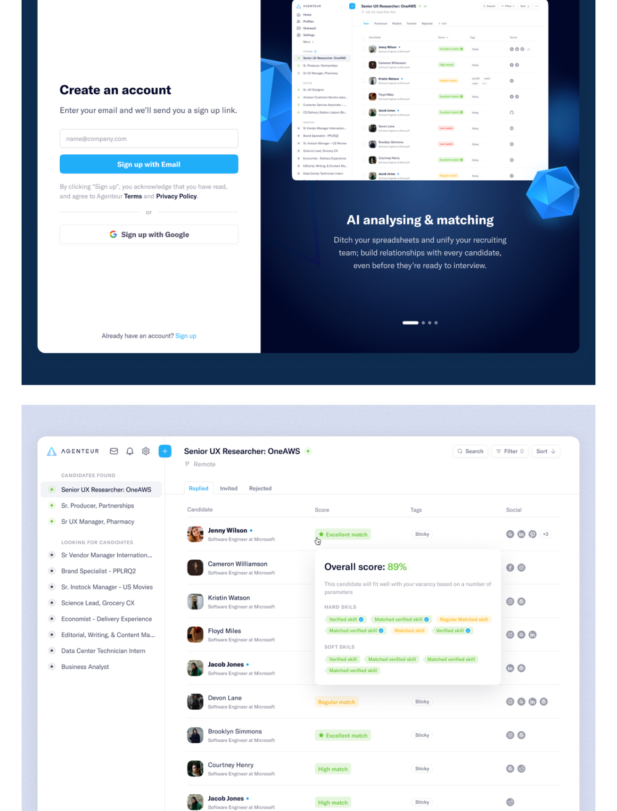
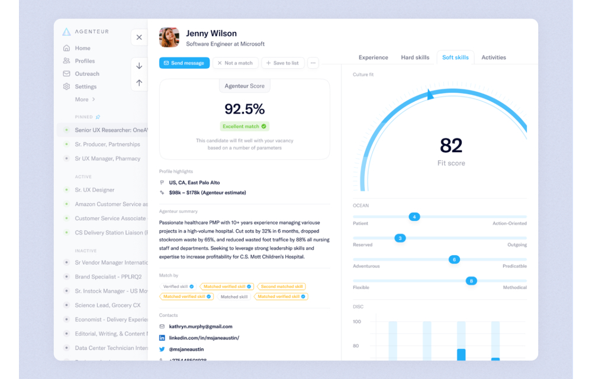

Agenteur: hire top engineers, instantly
Overview
A 0→1 MVP for a platform that matches companies with engineering talent using big data, psychological analysis, and neuroscience. Landing pages, the web app, and emails.
My role
Product designer. Research interviews, flows, UI, design system — working directly with the CEO and PM.
Team
Timeline
8 weeks
via Toptal

The brief
Agenteur wanted to replace the spreadsheet-and-recruiter grind with something closer to a dating app for engineering hires: a candidate pool scored by verified hard skills, soft skills, and fit, where a recruiting team could build relationships long before anyone is "ready to interview".
There was no product yet. The founder had a model, a pitch, and a lot of conviction. My job was to turn that into an intuitive, contextual web app — and the pages that sell it — in eight weeks.
Interviews first
I ran interviews with hiring teams of very different sizes in the US and Europe. The pattern was consistent: everyone had too many candidates and too little signal, and every tool they used buried the signal under columns. Three things mattered most to them.
The product
Sign up that already shows the app
The create-account screen is split: a minimal form on the left, the real product (not an illustration) on the right, with the AI matching story in three slides. People understood what they were signing up for before they finished typing their email.

A candidate list that explains itself
Roles sit in the left rail ("Candidates found" / "Looking for candidates"). Each candidate row shows a plain-language match quality and tags; hovering the score opens a breakdown of hard and soft skills — which are verified and which are stated.
The profile: one score, many reasons
The candidate profile puts the Agenteur Score next to the fit score and an "OCEAN"-style soft-skill map, with tabs for experience, hard skills, soft skills, and activity. The main challenge was density: show skills and matches clearly without overwhelming the user. Progressive disclosure did most of the work.

Outcome
The MVP shipped with the landing pages, the web app, and the transactional and outreach emails, all on one small design system. The founder had a product to put in front of customers and investors instead of a deck. The score card became the thing people pointed at in demos — proof that the model's output could be shown without hiding it behind a "trust us".
Screenshots are from a portfolio export; higher-resolution ones are on the way.